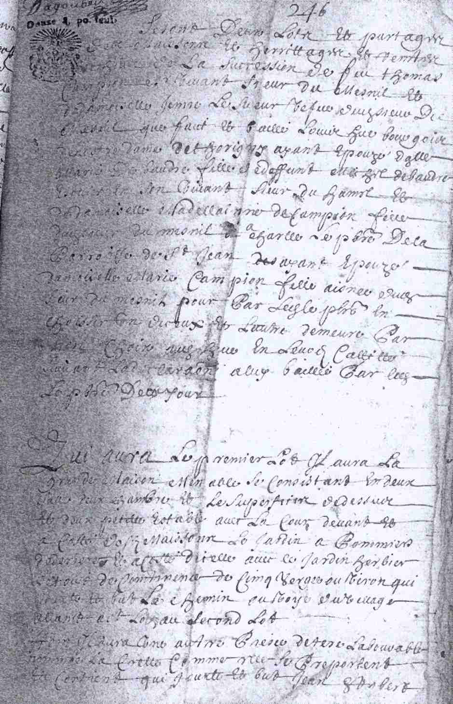
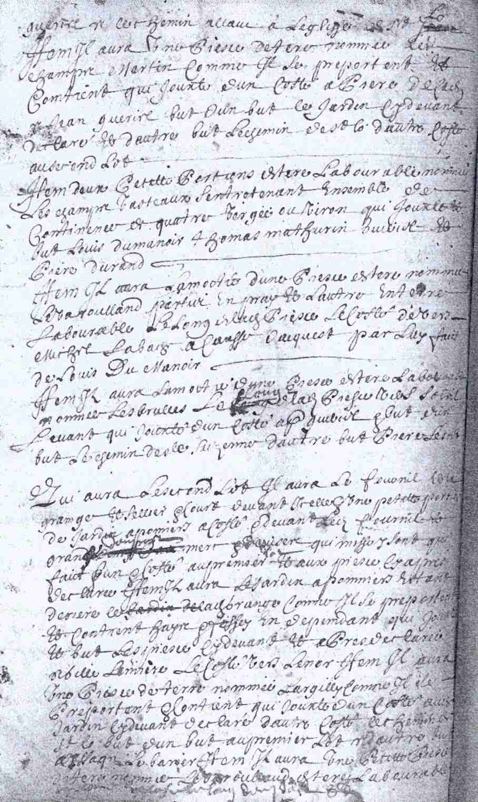
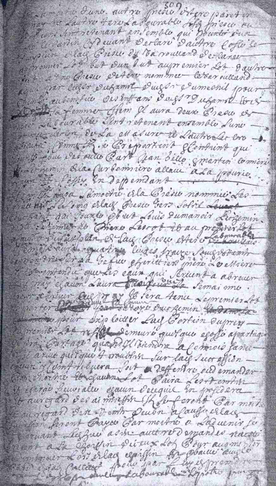
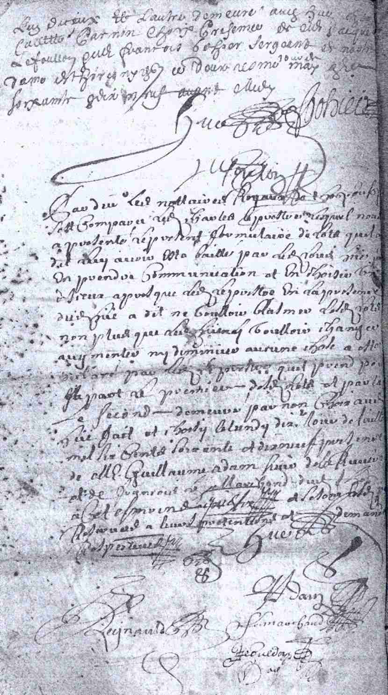

DOCUMENTS
NOTARIAUX (2/4)
DOCUMENTS
NOTARIAUX (2/4)
DOCUMENTS
NOTARIAUX (2/4)
DOCUMENTS
NOTARIAUX (2/4)
LOTS et PARTAGES de THOMAS CAMPION, sieur du MESNIL-GONFREY
Référence : 5E 13.220 f°246 et f°309,
Notariat de Torigni-sur-Vire
Provenance : Archives Départementales de la Manche
|
Se sont
Deux Lots Et partages
Qui aura
Le premier Lot Il aura La Item Il
aura une autre Piesce de tere Labourable |
 |
|
 |
gueriel et le chemin
allant a Leglise de st Lo Qui aura
Lesecond Lot Il aura Le fournil Et la |
|
Et la
moitié d une autre piesce de tere paretie Item Il
aura Lamoitié de la Piesce nommée Les |
 |
|
 |
Lun diceux Et Lautre
demeuré aud hue en sa Signatures de Hue, Gohier et Lefoulon
Par devt Lesd
nottaires Royaux de thor Soubz Signatures de Regnauld, Hue, Lemarchand, Adam et Leguedoys |
|
|
|
|
retour à la famille Campion |
suite des documents notariaux |